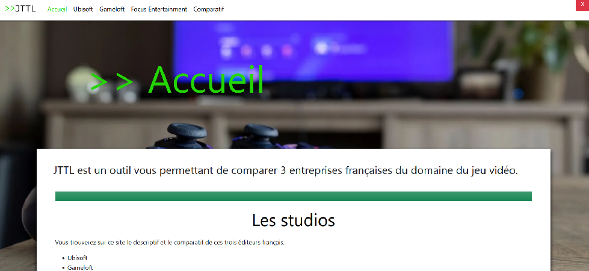

Retour
Dossier Économique (SAE 1.06)
Cette SAE, réalisé dans un groupe de 4 étudiants, avait pour but de présenter économiquement
3 entreprises du domaine du jeu vidéo (Ubisoft, GameLoft,Focus Entertainment) et de les comparer.
Trois personnes s'occupaient de présenter les 3 entreprises et la dernière devait les
comparer.
Le projet final a été rendu sous la forme d'un rapport écrit, puis sous la forme d'un site
Internet, visible ici

Mon travail
Durant cette SAE, j'ai réalisé dans un premier temps la présentation de la société Ubisoft. J'ai du pour
cela :
- Rechercher des informations sur différents sites (Site Web d'Ubisoft, Wikipédia,
Articles divers...)
- Synthétiser les informations pour ne garder que l'essentiel (histoire de
l'entreprise,...).
- Réécrire au propre les informations sur le rapport.
J'ai ensuite aidé à la réalisation du site Web final en :
- Réalisant le script JavaScript donnant un effet terminal à certains
textes.
- Trouvant certaines images du site comme le fond d’écran.
- Créant le logo du site respectant le thème du sujet.
- Ajoutant les informations du rapport sur le site comme le texte de présentation des
entreprises, les images du rapport et le comparatif.
Les Compétences
Durant cette SAE, j'ai appris à :
- Coder un site Internet. (C1)
- Gérer la répartition du travail dans une équipe. (C5)
Retour réflexif
Au final, je pense avoir bien réussi cette SAE. Nous avons pu faire tout ce que nous voulions faire dans
les délais.
Je pense que nous aurions cependant pu réaliser le rapport plus vite, car certaines informations ont été
plus difficiles à trouver que d'autres.